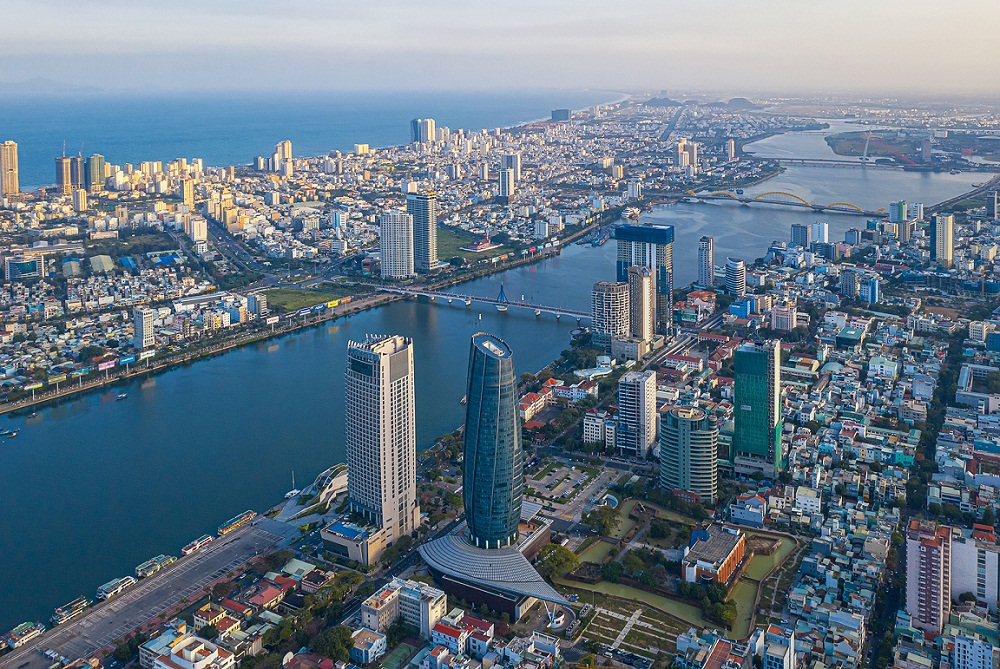
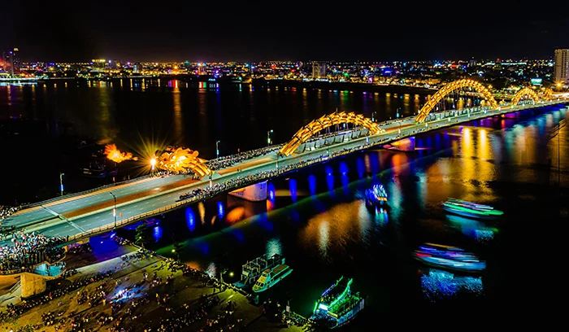
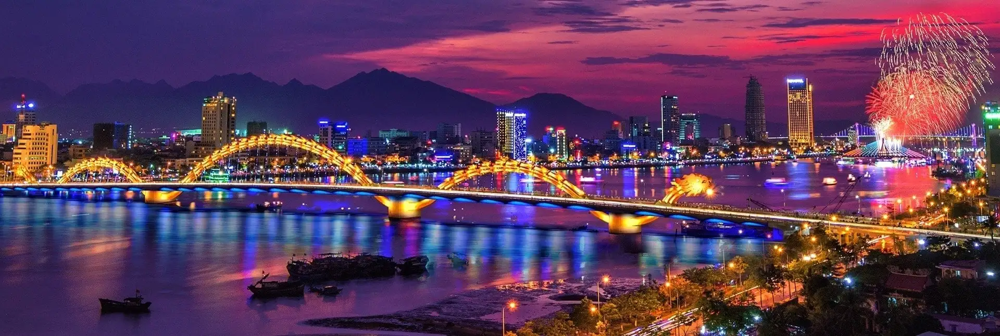

🏖️ Bãi biển đẹp
Đà Nẵng sở hữu nhiều bãi biển nổi tiếng, không gian rộng và cảnh quan đẹp.
Thành phố biển năng động và đáng sống
Đà Nẵng là một thành phố ven biển nằm ở miền Trung Việt Nam, nổi tiếng với những bãi biển đẹp, cảnh quan thiên nhiên phong phú, nhiều cây cầu hiện đại và nền ẩm thực đa dạng.
Khám phá Đà NẵngĐà Nẵng nằm bên sông Hàn và hướng ra biển Đông. Thành phố có vị trí thuận lợi, nằm trên tuyến giao thông Bắc - Nam và là cửa ngõ kết nối khu vực miền Trung với các địa phương khác trong cả nước.
Đà Nẵng được biết đến với môi trường đô thị hiện đại, nhiều cây cầu nổi tiếng, bãi biển đẹp và các điểm du lịch hấp dẫn. Đây cũng là một trong những trung tâm kinh tế, du lịch và dịch vụ quan trọng của miền Trung.



Đà Nẵng sở hữu nhiều bãi biển nổi tiếng, không gian rộng và cảnh quan đẹp.
Thành phố có nhiều cây cầu đặc trưng, góp phần tạo nên hình ảnh hiện đại của Đà Nẵng.
Du khách có thể thưởng thức nhiều món ăn đặc trưng của miền Trung.
Thành phố có núi, biển, sông và nhiều địa điểm tham quan hấp dẫn.